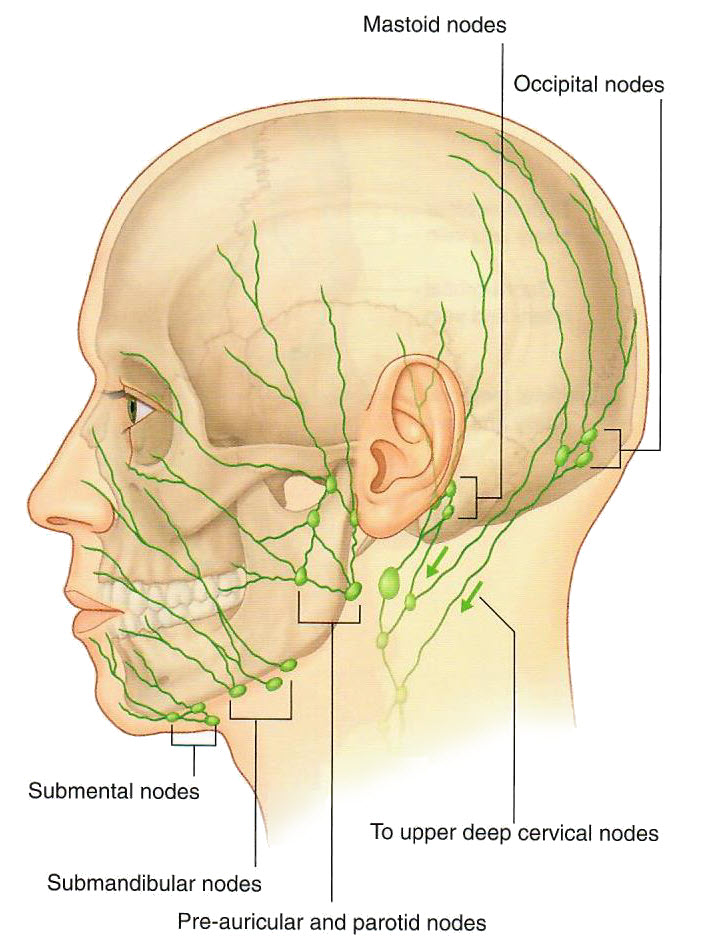

Neurology 5 - Module 3 - Muscles, Nerves and Vessels: Page 6 of 6
×

Lymphatic drainage
|  |
| Tap on image to enlarge |
| Change to a lateral view of the skull with the mandible. |
| Add the submental nodes. |
| Add the submandibular nodes. |
| Add the parotid nodes. |
| Add the mastoid nodes. |
| Add the occipital nodes. |
| Add the deep and superficial cervical. |
Note that all of the drainage from the face and head is toward the neck.
Drainage from the left side of the head eventually drains into the thoracic duct. (See CPR Week 9 Module 1 Page 6)
Drainage from the right side eventually drains into the right lymphatic duct. (See CPR Week 9 Module 1 Page 6)